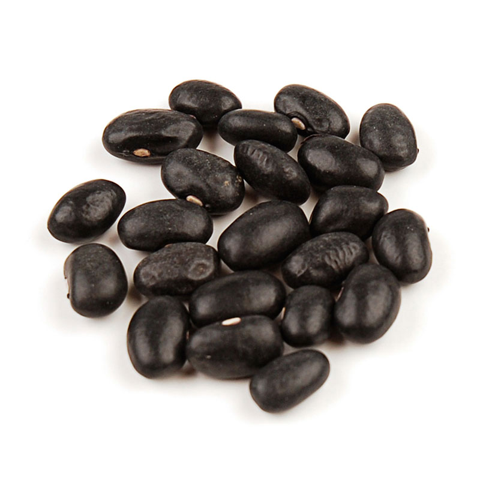
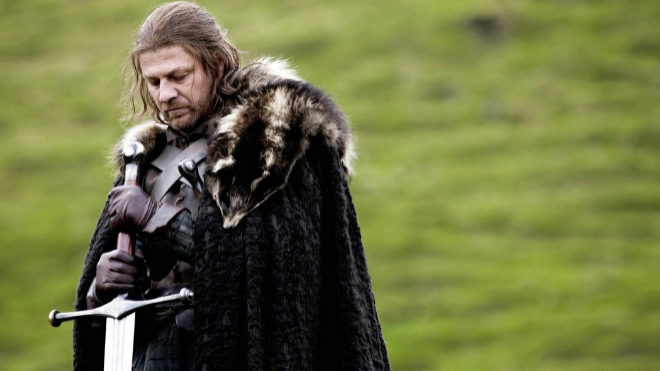
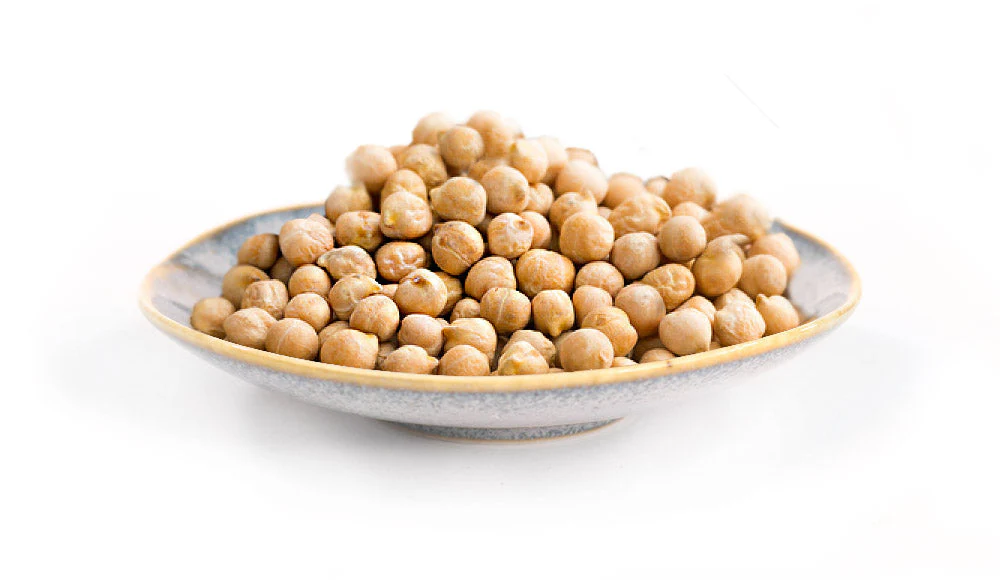

This is a list of all the beans I can think of right now
1. Black bean
Black beans are great in tacos. Click here for more information
2. Pinto bean
These are pretty basic beans, so I'm not going to waste your time showing you them or talking about them any more than I already have.
3. Sean Bean
Unlike other beans, Sean Bean is famous for playing characters who die early in the narrative arc of whatever movie or show he's in. Oh, sorry, spoiler alert. Click here to join Sean Bean's fan club.
4. Been
Been is actually the past participle of the verb "to be" and is not a type of bean, unfortunately.
5. Garbanzo bean
Garbanzo beans are also known as chickpeas, and honestly, that's a better name than garbanzo beans.
Additional beans
- Green bean
- Lima bean
- Navy bean
- Mr. Bean
- Kidney bean